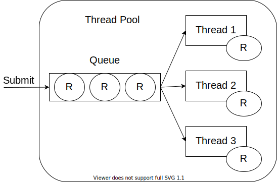
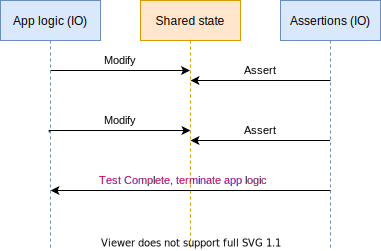

Time-warping with Cats Effect
Jacob Wang
Hello
- Software Developer at

- @jatcwang
- Talk to me about types, FP, libraries and tools :)
It’s Tuesday afternoon…
- You just finished the beautiful data-processing pipeline using fs2, with windowed batched message acknowledgements, exponential backoff on error, etc etc.
- But how do you test it?
The Problem
Tests involving time and delays are difficult to write
- Using
Thread.sleep(or any kind of real clock) leads to long-running and flaky tests - but what else can we do?
In this talk
- Threads, thread pools and schedulers from the ground up
- How to build a “controlled” thread pool / scheduler
- How to write tests with cats-effect’s TestContext
Back to the basics
In the beginning, we have java.lang.Thread
new Thread(..)creates a new JVM thread, backed by a native OS threadthread.run()executes the Runnable initially assigned to the thread
Thread.sleep()suspends the current thread’s execution, and OS schedules other threads to run
What’s wrong with Threads?
- Clunky API
- Overhead both in processing time and memory
- Memory overhead (each thread has its own stack)
- “Context Switching” cost from one thread to another
- In many use cases it limits scalability
(e.g. Backend services serving a lot of requests all hitting the DB)
Thread Pools (ExecutorService)
- A few worker threads take from a queue of Runnables and execute them
ExecutionContextis Scala’s own simpler interface for the same idea

ScheduledExecutorService
trait ScheduledExecutorService extends ExecutorService {
// Simplified, delay in nanoseconds
def schedule(runnable: Runnable, delay: Long): Unit
}- Schedule a Runnable to be executed after a delay
- Typically backed by a single max-priority thread running (essentially)
Thread.sleepcontinuously- See
java.util.concurrent.ScheduledThreadPoolExecutor
- See
One Simple Idea
Can we write a ScheduledExecutorService that doesn’t use sleep nor run anything, but instead just record the Runnables and when it should be run?
class ControlledScheduledExecutorService extends ScheduledExecutorService {
private var currentTime: Long = 0
private var allTasks: SortedSet[Task] = SortedSet.empty // sorted by runAt
override def schedule(runnable: Runnable, delay: Long): Unit = {
allTasks = allTasks :+ Task(runnable, currentTime + delay)
}
}Preparing to time-warp…
Since no OS thread nor scheduling are involved, we have total control over what to run and when to run it
class ControlledScheduledExecutorService extends ScheduledExecutorService {
private var currentTime: Long = 0
private var allTasks: SortedSet[Task] = SortedSet.empty // sorted by runAt
override def schedule(runnable: Runnable, delay: Long): Unit = // ...
def tick(elapseTime: Long) = {
currentTime = currentTime + elapseTime
var nextTask = allTasks.findAndRemove(_.runAt <= currentTime)
while (nextTask.nonEmpty) {
nextTask.get.runnable.run()
nextTask = allTasks.findAndRemove(_.runAt <= currentTime)
}
}
}Time-warp complete!
And that’s all there is to it!
- Evaluation depends on “what task is in the queue, and when should they be run”, which means there’s no difference between running 100 Runnable scheduled all within 1 millis or 1000 years!
- “Great, but only cavemen use Runnables”
It’s Runnables all the way down
Almost all effect libraries / Futures ultimately ends up as Runnables being executed un by a thread pool.
implicit val ec: ExecutionContext = ...
Future {
1 + 1 // 1
}.map { res =>
println(res) // 2
}
// Eventually translates to something like...
ec.execute(new Runnable {
def run() = {
val res = 1 + 1 // 1
ec.execute(new Runnable { // submit the "next step" back to the EC
def run() = {
println(res) // 2
}
})
}
})- So the technique covered thus far can be applied everywhere!
cats.effect TestContext
TestContext is one implementation of controlled thread pool / scheduler
- You can find it in
cats-effect-lawslibrary dependency
val testCtx = cats.effect.laws.util.TestContext() // TestContext <: ExecutionContext
implicit val ctxShift: ContextShift[IO] = testCtx.ioContextShift
implicit val timer: Timer[IO] = testCtx.ioTimer
val io = for { // Step 1 Define the IO
_ <- IO { println("hi!") }
_ <- IO.sleep(100.days)
_ <- IO { println("I have awakened!") }
}
// execute our IO in the TestContext
ctxShift.evalOn(testCtx)(io).unsafeRunAsyncAndForget() // Step 2 "run" the IO
println("Ticking 50 days..") // Step 3 time-warp!
testCtx.tick(50.days) // "hi!" printed here
println("Ticking another 50 days..")
testCtx.tick(50.days) // "I have awakened!" is printedStructuring your test
How to structure our time-sensitive tests?
- We have “app logic” and “assertions” (observer)
- Run these two IOs in “parallel”

val appLogic: IO[Unit] = ??? // Step 1: Define Logic and Assertions
val assertions: IO[Unit] = for {
_ <- IO.sleep(5.seconds)
_ <- assertState(state1)
_ <- IO.sleep(5.seconds)
_ <- assertState(state2)
} yield succeed
// Step 2: Run it with test "framework" (reusable across test suites)
val testContext = TestContext()
val test = for {
fibre <- appLogic.start // forks the app logic into the background
_ <- IO.sleep(1.nanos) // very small delay to ensure assertions
// always run after app logic has happened
_ <- assertions.guarantee(fibre.cancel)
} yield succeed
// Step 3: "Execute" the test
val f: Future[Assertion] = test.unsafeToFuture()
// Actually execute all the app logic and assertions
// Note that assertions will terminate the appLogic when it is done
// so that this works for infinitely repeating app logic too
testContext.tick(1000.days)Final words
- The underlying works is based on JVM primitives , you can time-warp with Scala Future, Monix, ZIO, and Java
CompletableFuturetoo ;) - Since only TestContext is controlled, ALL your Runnables need to be submitted to it
- Doobie Transactor, any
Future{..}/future.map, etc etc - External libraries should allow you to specify a thread pool
- Doobie Transactor, any
Acknowledgements
- People on cats-effect gitter chat who helped me setup TestContext tests
- Daniel Spiewak (@djspiewak)
- Fabio Labella (aka SystemFw)
- Gavin Bisesi (@Daenyth)